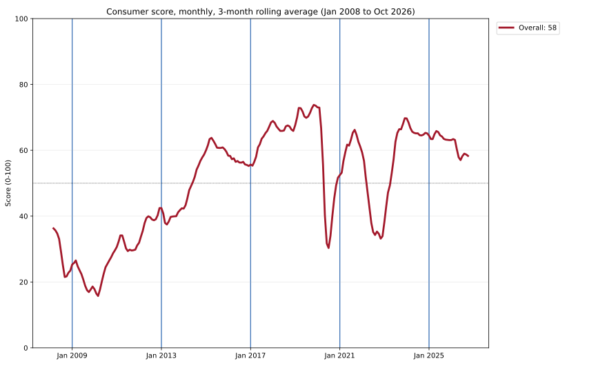

Consumer score
Updated Nov 13, 2026 at 18:55 PST
Consumer score · October 2026
58 / 100 Down from 65 in Oct 2024

5 pillars
Click a pillar for its score items and charts.
Jobs30%77 Income22.5%44 Cost of living22.5%56 Debt stress15%51 Buffers10%57How the score is built
A 0–100 reading of how the consumer is doing. Each indicator is converted to 0–100 with one of three curves (percentile, threshold or target), the scores are averaged within each pillar, and the pillars are combined with a weighted geometric mean, each floored at 5, so strength in one pillar cannot fully offset a collapse in another.
What goes into the score
16 indicators in 5 pillars. Click a pillar or an indicator for its details.
| Indicator | Series | Curve |
|---|---|---|
| Jobs · 30% | ||
| Unemployment rate | UNRATE | Percentile, lower is better |
| Prime-age employment rate | LNS12300060 | Percentile |
| Quits rate | JTSQUR | Percentile |
| Initial claims | IC4WSA, PAYEMS | Percentile, lower is better |
| Income · 22.5% | ||
| Real income excluding transfers | W875RX1, POPTHM | Percentile |
| Real wages | ECIWAG, CPIAUCSL | Percentile |
| Real spending | PCEC96, POPTHM | Percentile |
| Cost of living · 22.5% | ||
| Inflation | CPIAUCSL | Target |
| Gasoline | GASREGW, CPIAUCSL | Percentile, lower is better |
| Mortgage payment burden | MORTGAGE30US, MSPUS, MEHOINUSA646N, A229RC0 | Threshold, lower is better |
| Groceries | CUSR0000SAF11 | Target |
| Debt stress · 15% | ||
| Debt service ratio | TDSP | Percentile, lower is better |
| Loan delinquency | DRCLACBS | Percentile, lower is better |
| Credit-card rate | TERMCBCCALLNS | Percentile, lower is better |
| Buffers · 10% | ||
| Saving rate | PSAVERT | Percentile |
| Net worth / income | HNONWPDPI | Percentile |
Michigan sentiment and presidential approval stay on display in Economic Indicators, but outside the score.